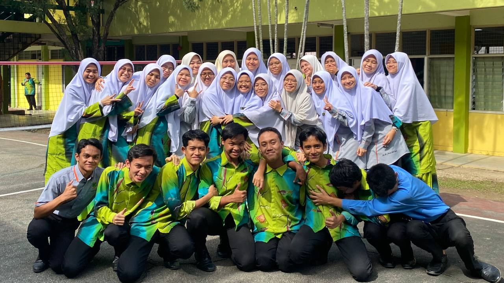

Leadership & committees
Deputy Secretary · Academic Bureau, Student Council
Role summary
- Served as Deputy Secretary of the Academic Bureau under the Student Council at Kolej Islam Sultan Alam Shah.
- Contributed to initiatives focused on student academic development and engagement.
- Supported academic-programme planning and coordination while managing documentation and communications.
- Developed practical leadership, administration, teamwork and problem-solving skills through student governance.
Moments


